A proper gaming room setup hits differently than just a desk with a monitor sitting on it. One good LED glow, a clean desk, and a genuinely comfortable chair can turn a boring bedroom corner into a real gaming zone that's exciting to sit down in.
And it's not only about how it photographs. A smart setup improves comfort, focus, and mood just as much as it improves the look of the room, the right layout can genuinely help a teen stay organized instead of living inside a snack-wrapper apocalypse.

What Actually Makes a Gaming Room Setup Work
A good gaming room setup comes down to five things working together: comfort, lighting, organization, personality, and performance. Skip even one, and the room ends up feeling incomplete no matter how much money went into it. Comfort gets overlooked more than any of the others, an adjustable chair, correct monitor height, and decent cable management matter more than almost anything else, since most teens spend hours a day parked in that one spot.
Budget matters less than people assume going in. Some of the best gaming rooms online cost surprisingly little, because the owner built around one real statement piece, a bold desk, a standout chair, a neon sign, instead of piling on a dozen random accessories. Lighting is the cheapest way to turn a plain room into something cinematic, and even a simple corner desk can make a tiny bedroom feel like its own dedicated zone the moment you sit down.
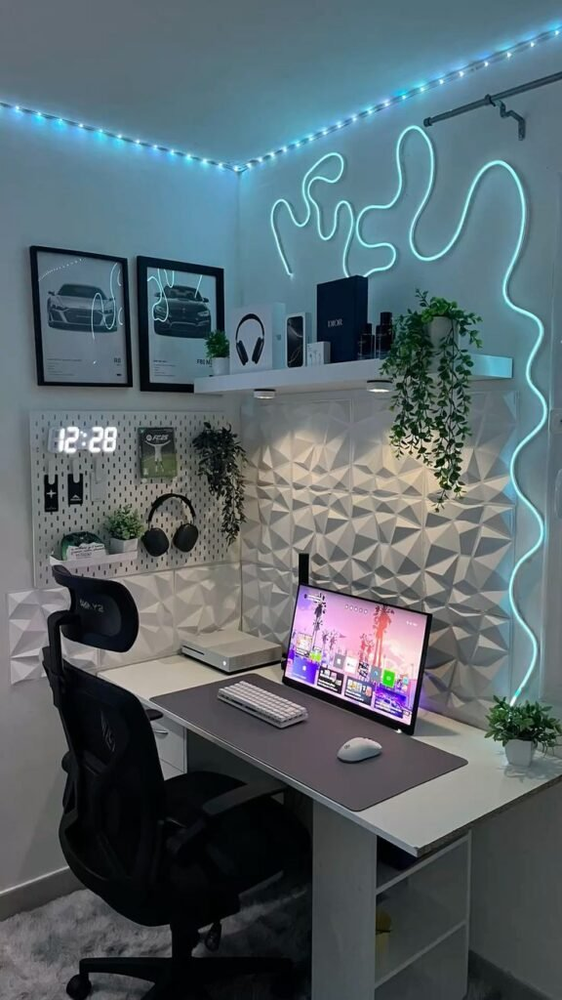
12 Gaming Room Setup Ideas Worth Trying
1. Smart Setup
Smart gaming rooms feel genuinely futuristic without needing an unreasonable budget to pull off. A handful of small tech upgrades go a long way toward both convenience and atmosphere.
Voice-controlled lighting sounds unnecessary right up until you actually try it, saying a single command and watching the whole room shift color on cue feels disproportionately satisfying for how simple it is under the hood.
Smart plugs, wireless chargers, and app-controlled lighting are all worth the small investment. Not every upgrade has to announce itself loudly, the quieter tech additions often end up being the most genuinely useful day to day.
2. Console Setup
Not everyone wants a full gaming PC. A console-focused room can look just as impressive while costing less and skipping the endless upgrade cycle that PC building has somehow normalized.
Wall-mounting the TV is the single best upgrade for a console setup, it frees up desk space, improves the viewing angle, and makes cable management noticeably easier.
Comfortable floor seating matters here more than almost anywhere else, since console gaming usually means leaning back rather than sitting upright. A wall-mounted screen paired with deep bean bag seating nails that completely.
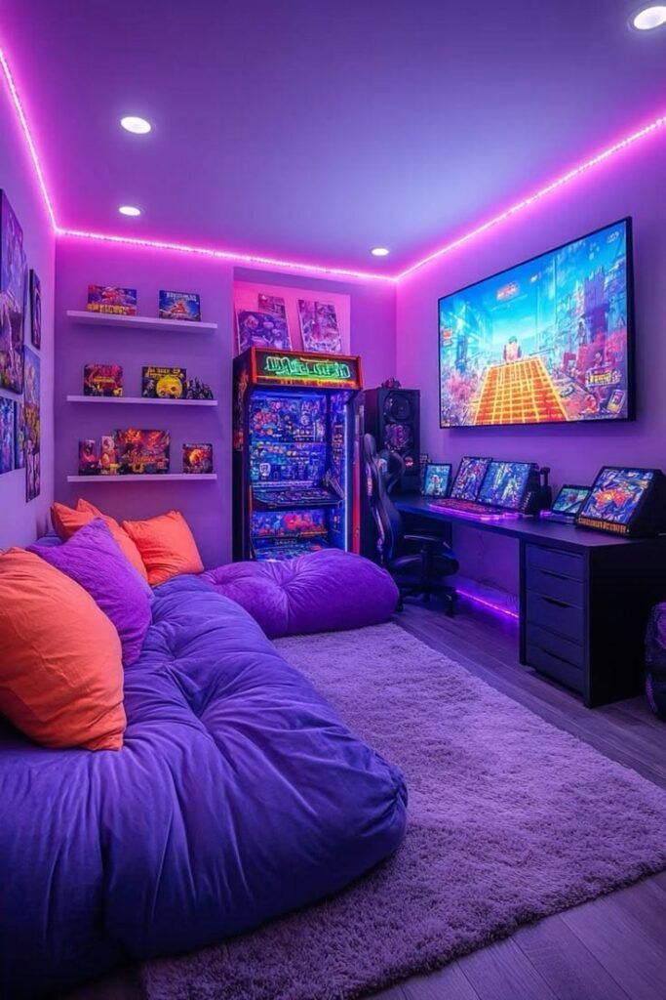
3. Gaming-Meets-Study Setup
Most teen bedrooms serve more than one purpose these days, gaming zone, homework station, and streaming corner all rolled into one. A good setup should support actual daily life, not just look good in a photo.
Visual separation helps more than people expect, different lighting zones, a dedicated organizer, and distinct decor for each area let the brain actually switch between relaxing and focusing.
Motivational signage paired with an actual to-do list next to the gaming desk keeps both halves of the room doing their own job instead of one quietly swallowing the other.
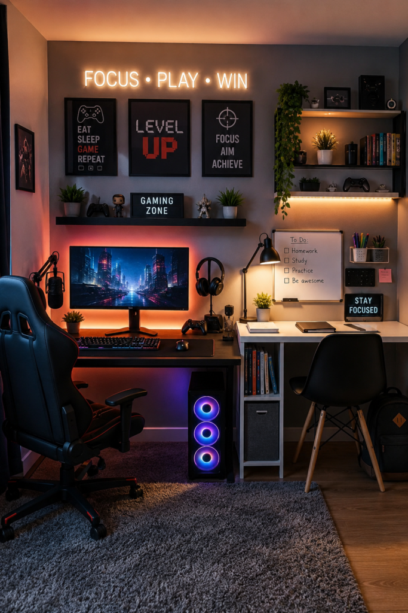
4. LED Shelf Lighting Setup
Strip lighting tucked behind shelves does more for a room's atmosphere than almost any single purchase you could make. Plain shelves start feeling unfinished the moment you've seen what proper backlighting actually does.
Running LED strips behind display shelves adds both light and visual depth at once, it works especially well behind collectibles, games, or figures, where the glow highlights whatever's actually on display.
A storage shelf backlit in contrasting colors above a dual-monitor desk stops being just storage and becomes one of the room's best features.
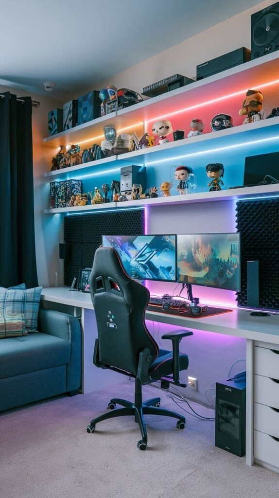
5. Dual Monitor Setup
A dual setup sounds fancy on paper, but it solves a genuinely practical problem for anyone who games, streams, studies, or edits video, one screen handles gameplay, the other handles everything else.
Once you're used to two screens, going back to one feels almost painful. Watching a walkthrough while playing, keeping voice chat visible, or multitasking without constantly tabbing in and out all stop being a hassle.
The trick to keeping it from looking chaotic is balance, matched monitor sizes and aligned heights read as a cohesive setup instead of two screens that just happen to share the same desk.
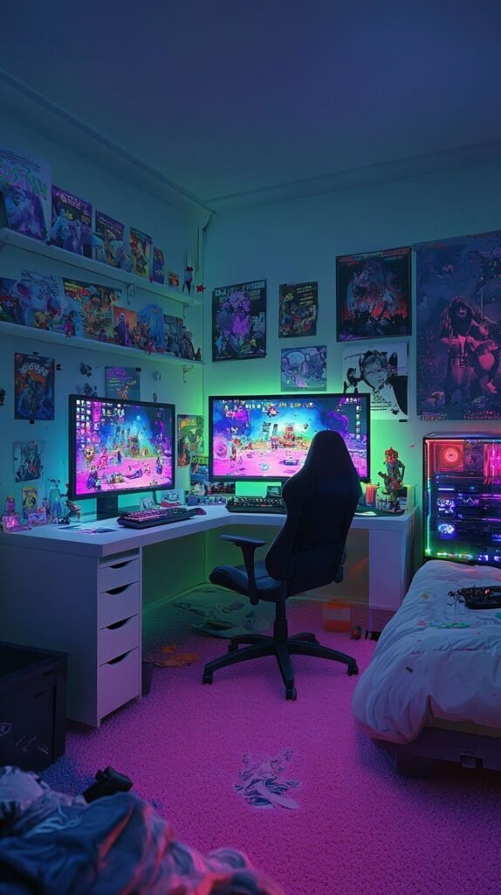
6. Small Bedroom Setup
A small room calls for strategy, not sacrifice. Some of the best gaming setups online actually exist inside tiny bedrooms, precisely because the owner was forced to design with intention.
Compact furniture is non-negotiable here, slim desks, wall shelves instead of floor storage, and a wall-mounted TV instead of a bulky standing one all free up real floor space.
A themed single-bed setup with a corner desk and wall-mounted screen proves that a small footprint doesn't have to mean a scaled-down gaming experience.
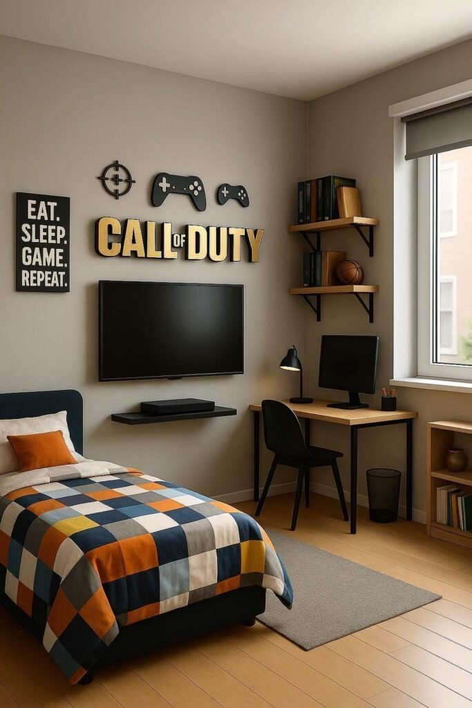
7. Neon Setup
Neon setups feel bold, energetic, and ready for a close-up in the best possible way. The key is using neon accents strategically instead of turning the entire room into a glowing traffic sign.
Electric blue, pink, purple, and cyan tend to work best, and a custom neon sign, a gamer tag, a lightning bolt, a favorite phrase, instantly makes a setup feel one-of-a-kind.
A wall of custom neon logos layered over gaming posters, glowing red and blue against a dark room, is neon at its most confident, loud, but still clearly intentional rather than random.
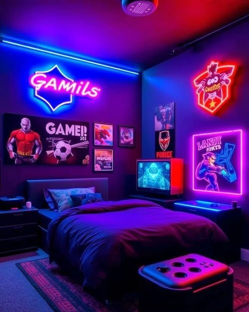
8. Clean Setup With One Statement Light
Not every teen wants aggressive RGB or a dozen competing accessories. A clean, cool-toned setup proves that restraint can look just as striking as a full light show.
The approach is simple: keep the palette tight, navy, gray, and black work well together, and let one single statement piece carry the whole room instead of ten smaller ones competing for attention.
A glowing neon circle sign anchoring an otherwise simple navy-and-gray corner desk is exactly that kind of restraint in action. One bold element, everything else quiet around it.
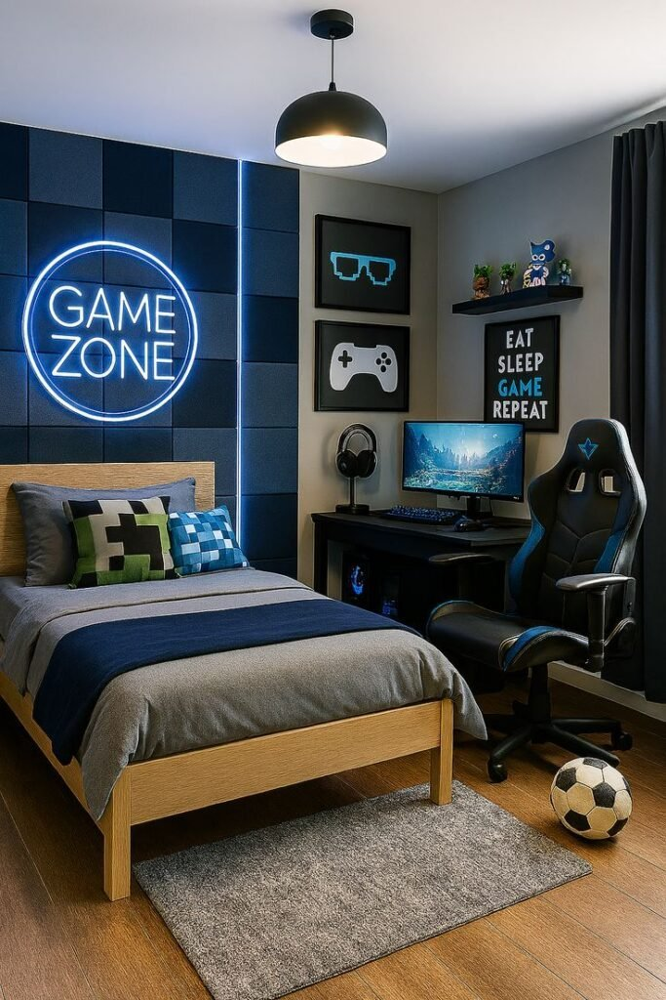
9. Anime-Inspired Setup
Anime gaming rooms exploded in popularity for good reason, they combine personality, color, and creativity in a way a generic setup simply can't match.
The move is to commit to one theme rather than mixing a dozen different aesthetics together. Pick one favorite series, one color palette, and matching posters, and the whole thing reads as intentional instead of cluttered.
A wall of character posters and art surrounding a dual-tone RGB desk and a row of plushies shows exactly how far one consistent theme can carry an entire room.
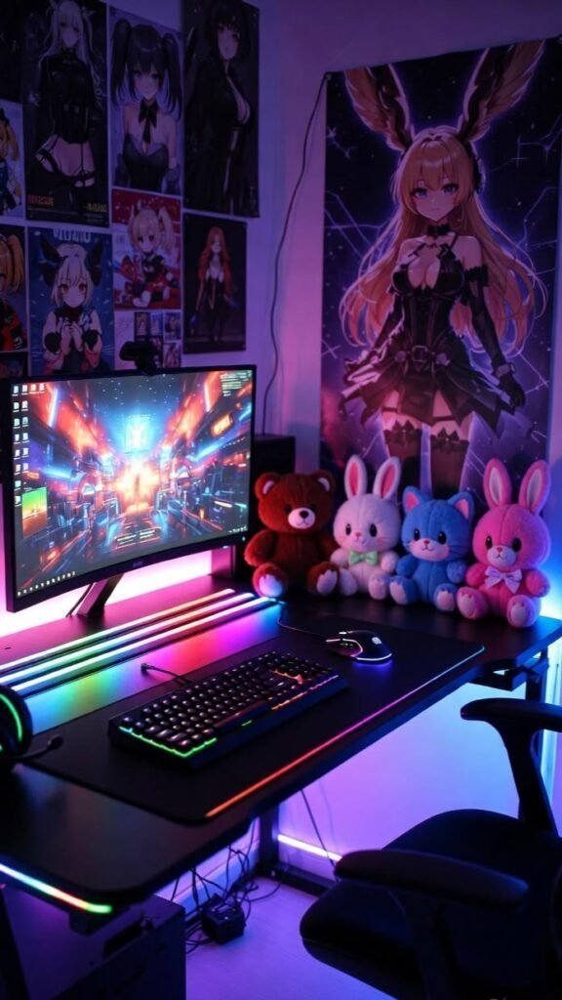
10. Cozy Setup
Not everyone wants their room to feel like a spaceship cockpit. Some teens just want a setup that feels relaxing to come home to after school, and that's exactly where a cozy build shines.
Texture is what makes a room feel warm instead of cold, soft lighting, collected figures or keepsakes on a shelf, and warm wood tones all layer together instead of competing for attention.
Warm shelf lighting glowing behind action figures and games, next to an easy chair and a lamp-lit bed, feels considerably easier on the eyes during long sessions than cold blue LEDs ever do.
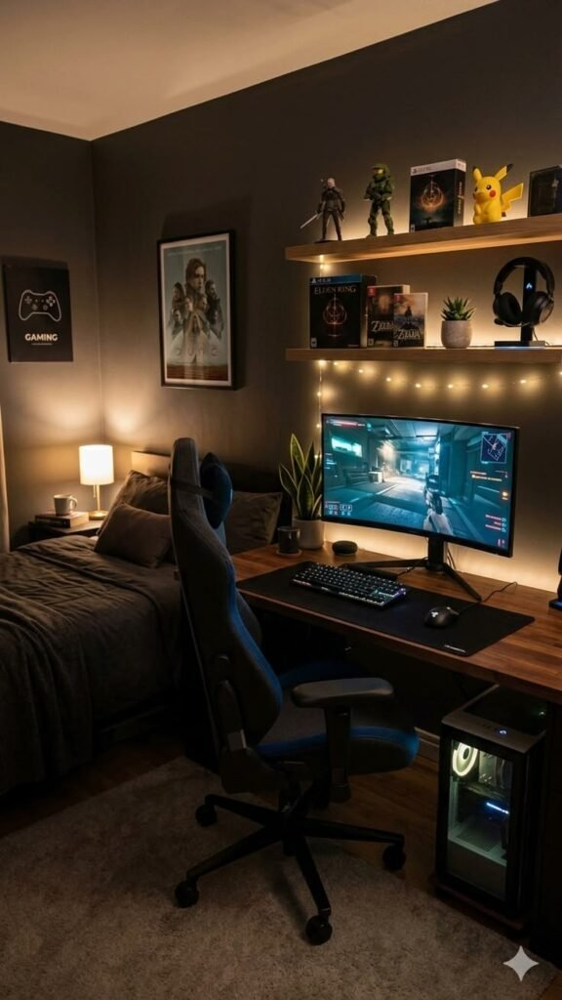
11. Black and White Setup
This style never fails. A black and white gaming room feels sleek, modern, and mature without trying too hard, and it photographs beautifully whenever it ends up on camera.
The formula is simple: black furniture adds depth, white or gray walls keep the room from feeling heavy, and a single accent light carries whatever personality the room still needs.
An illuminated display shelf against dark monochrome walls, with wall-mounted controllers treated as art, is proof this look can hold up for years without ever feeling dated.
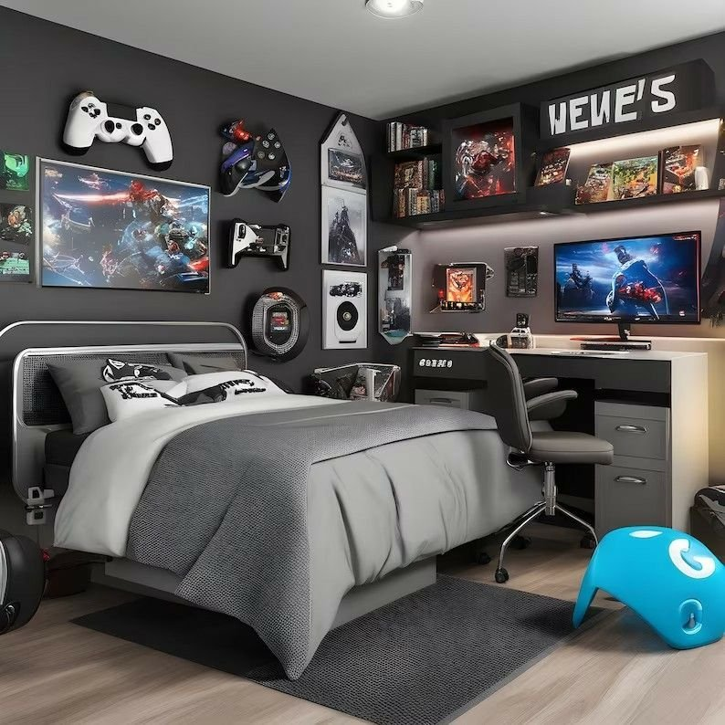
12. RGB Setup
RGB setups stay popular for one simple reason: they look incredible. Some people call RGB lighting excessive, sure, but those same people are usually sitting under a flat ceiling light that belongs in a waiting room.
The trick to making RGB actually look good instead of chaotic is balance, stick to two main colors, matching peripherals, and indirect lighting rather than every light source going its own separate direction.
A glowing PC case paired with a clean desk mat, like an orange-lit tower sitting beside dual monitors, proves that RGB can look genuinely premium instead of overwhelming when it's handled with restraint.
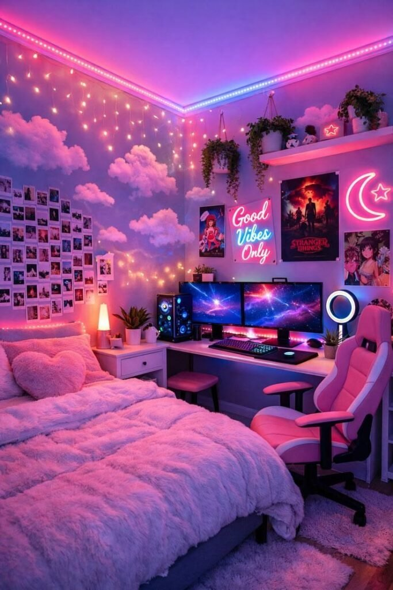
Final Thoughts
The best gaming room setups balance comfort, personality, and function all at once. A setup should feel exciting to use every single day, not just impressive in a photo, whether that means a minimal black-and-white build or a glowing RGB cave ready for a tournament, both work the moment the room feels genuinely intentional.
Start small if the budget calls for it, and add upgrades gradually from there. Lighting, organization, and comfort create the biggest impact the fastest, everything else is just the fun part that happens naturally over time, long after the first setup is finished.